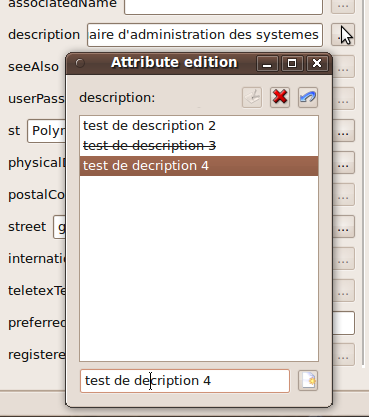
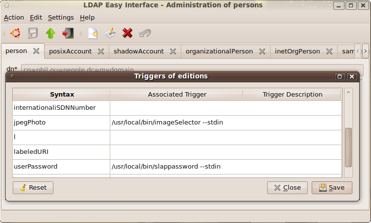
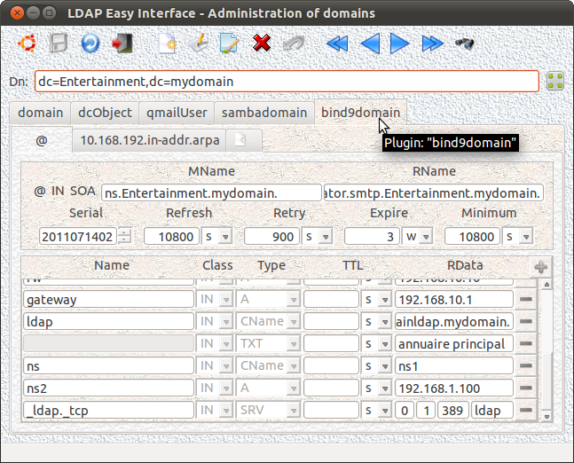

Next Previous Summary (Français - English)
This GUI allows to
manage the LDAP tree for each LDAP domain of the administration of an
intranet (adding/removing/modifying and parameters setting).

Note: The dual presence of the field "streetAddress" due to an error in the schema definition "cosine.schema" made by its RFC...
This GUI shares its code with the three other GUIs: "
personFrontend", "
posixGroupFrontend" and "
organizationalRoleFrontend".
The name of its launch executable must therefore contain the string "
Frontend"
preceded (without space or other charactere)
by the name of the "
object Class"
of the entity that it manages. (above: "
domain").
Such an executable may be called by a physical or symbolic link ("
ln [-s]")
that meets the above rule or, failing that, that does not contain the string
"
Frontend".
This rule is recursive, and therefore operates on links of links. (
See below)
The operating principle of this interface of LDAP domains management is the dynamic creation of its input mask from:
- the list of "object Class" constituting the domain being viewed (or created or modified),
- and a list of their constituent attributes.
The architect of the LDAP directory can, on a specific subtree,
change the composition of subdomains present or future (add or delete
at will one or more "
objectClasses").
These changes will be inherited by all their subdomains to come.
The same "object classes" than those of the parent domain are actually proposed automatically by default when creating a new sub-domain; this list of "
objectClasses" may however be subject, at any time, to modifications (add/remove)
by the operator, as well as this one owns the rights to change the structure of the objects managed by this interface (role: "
adminStruct").
Thus, for example to create a subdomain of the root, the following query will list the "objectClasses" to consider (the field "top" being of course excluded):
m_connectForm->getLdapHandle()->doSearchScopeBase ( m_connectForm->getRootEntry(), "objectClass" ) ;
The result could be:
objectClass: top
objectClass: domain
objectClass: dcObject
objectClass: qmailUser
objectClass: sambaGroupMapping
From this list, for each
occurrence
found, can be extract from the LDAP schema the list of mandatory and
optional attributes needed to dynamically construct the display mask
the form of a window with tabs ordered by "
object Classes" ("QTabWidget")..
m_connectForm->getLdapHandle()->doSearchScopeBase ( "cn=subschema", "objectClasses" );
Extract of a possible result:
...
objectClasses: ( 1.3.6.1.4.1.1466.344 NAME 'dcObject' DESC 'RFC2247: domain component object' SUP top AUXILIARY MUST dc )
...
The function "LDAPObjectClass* ldap_str2objectclass ()" (from the LDAP-client library) allows the interface converting each result string to a structure "LDAPObjectClass" and extract the desired information easily ("oc->oc_at_oids_must" and "oc->oc_at_oids_may" in the format "char ** - null terminated").
Nota : OpenLdap does not allow, at present, to change the "
DN" of an entry if it is not a leaf of the LDAP tree... The GUI "
domainFrontend"
emulates however (
with the operator profiles "
adminStruct") this kind of "
DN" modification (
except of course the root directory: "
rootEntry")
by moving - ie: copy+delete - any of the tree on a such request. Beware of writing volumes in the database that can be generated by such queries...
For possibly multivalued parameters, the following window is used and allows editing of all the desired values for the parameter.

Note: The different values are automatically sorted alphabetically, the first one appears implicitly in the mask main screen of the interface. To force the order, the syntax: "{1}parameter1, {2}parameter2, ..." is obviously useful...
The definition of triggers is called through the menu: "
Settings/Triggers for Editing fields".
These triggers can handle the case of some specific data when
entered by the operator for example, to meet their formatting or to
comply with certain consistency rules that may exist (not necessarily
known from the authorized operator to manipulate this kind of data).
This allows also simply to appeal to other specific interfaces that
are better adapted to the handling of certain data type, such as for
example an image picker for entering the parameter "
jpegPhoto"...

Such a mask defining the triggers is accessible to the operator in editing mode only if the role "
adminStruct" has previously been assigned.
The external command (format "
Unix Shell")
defined within each trigger is called automatically by the GUI when the
operator attempts to edit the fields for which the trigger is defined.
During the execution of each trigger, the external command that defines it, is called with, in its standard input (
stdin),
the current value of the trigger field. It goes without saying that the
external command can of course ignore this value if it does not need it
at runtime.
Each external command invoked by a trigger should be written so as to return with:
- either, the new input validated by the operator (possibly including "", null value) to standard output (stdout) of the process, validated by a return code equal to: 0 (zero),
- either, on breaking or on runtime error, a return code different from 0 (zero), possibly completed with an error message on the error output "stderr" of the process, to inform the operator about the cause of failure.
The value string (or, more generally octects, depending on the
nature of the information captured) and properly returned will be the
new contents of the trigger field.
Use of attribut values :
The values of the other attributes of the input mask (attributes of the object being edited) can be used in the definition of any trigger by the following syntax: "%
attributeName" ...
For example: "
%dn" or "
%uid"
will be replaced by the values in these attributes just before executing the command "
shell"
that will define the trigger using them.
Example of external command callable within a trigger: "
/usr/local/bin/slappassword"
This graphical interface "
slappassword" (version 0.2 - 20100921) offers,
in this case, a graphical frontend to the console command: "
slappasswd" from project
OpenLDAP.
This notion was introduced by version 1.7 (20110803)
of this Admin GUI. The definition of such triggers is done through the menu: "
Settings/Triggers on Displaying".
Example :
This notion was introduced by version 1.3 (20100926)
of this Admin GUI. The definition of such triggers is done through the menu: "
Settings/Triggers on Backup".
This is actually the same principle as above but, in this case,
defined triggers will be awakened at the time of the backup in the LDAP
database of the creation/ editing of each attribute concerned with the
definition of such triggers.
Example : update of the attributes "
sambaPwdLastSet" and "
sambaPwdCanChange" on backup of the new "
sambaNTPassword" (modified or created) by the adequate external commands.
These specific triggers are recursive. This means that if a trigger
on update has the effect of changing another attribute, so this other
attribute will trigger its own trigger (and so on) ...
Note: Watch out for circular references in the definitions of triggers
(modification of another attribute, changing it himself the previous one) !...
Nevertheless, in order not to allow triggers in infinite loops, the number of recursions is arbitrarily (by program) limited to 15...
6.6 The plugins
If the one or the other extensions ("plugins") "
libsambadomain.so" or "
libbind9domain.so"
is available at the launch of the execution of the graphical interface "
libdomain.so", so
this extension will be inserted automatically in a new tab within the mask interface, like a new "
objectClass",
completing this way the possibilities of managing for configuring the LDAP domains:

The code of this GUI is currently shared with three other interfaces of LDAP administration.
Latest version (
20120102)
here.
After compiling (
and use the command "
ln [-s]"),
it will be the call name of the program that will determine the
administrative interface to be execute, and thus, the type of directory
data to be managed by the operator ("
domainFrontend", "
personFrontend", "
posixGroupFrontend" or "
organizationalRoleFrontend").
Examples of definitions:
Examples of calling GUI:
me@home:~$ domainFrontend
me@home:~$ frontend --plugin person
me@home:~$ personFrontend
me@home:~$ frontend --plugin libposixgroup.so
me@home:~$ organizationalroleFrontend
...
Tests...
Next Previous Summary